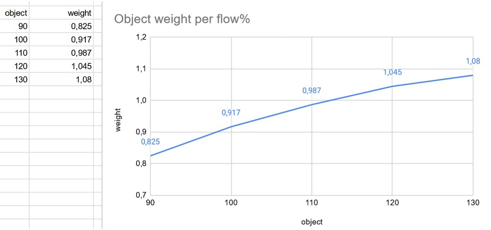
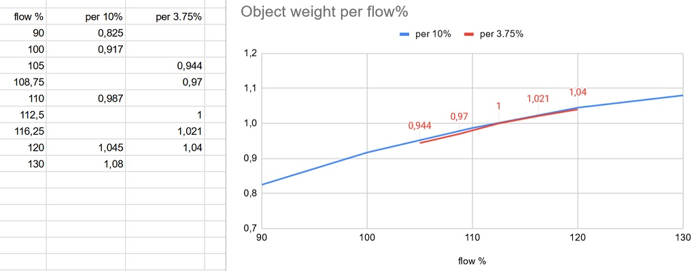
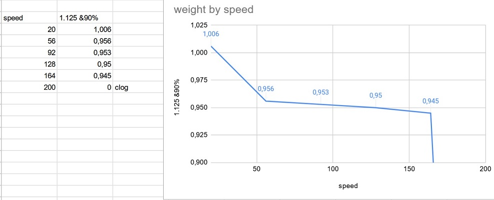

Extruder Flow Calibration by weight |
This test will help you to choose an extrusion multiplier, a maximum overlap and a curve for the extruder flow compensation for high speed. This is useful to first calibrate a custom printer.
This calibration is cut in three main steps:
You will need a precision scale, with some weight if possible.
This step will allow you to check what are the maximum extrusion multiplier possible.
First, you need to select a filament with a good dimensional profile (like prusament, where the filament extrudion multiplier should be 1). Then create a filament profile with a correct density for it (if it doesn't exist yet). Set the filament max print speed to something low for your printer/extruder (something like 20mm/s) so it doesn't reduce the extusion flow.
Then, select below the weight of the samples. A lower weight will print faster, but will be more difficult to measure. If you have some weights, choose a weight you have, so you can compare them.
Click on "Generate for multiple flow", and print the samples on your printer. The print should be ordered to print first the object that are nearest of 100% flow. Check regularly if a print won't fail. A flow too low can lead to a part that won't adhere enough on the build plate, and a flow too high may "fuse" the part with the nozzle.
Each object has a name that is their flow percentage. When printed, write on them with a marker their number, so we can identify them. Weight them and report on a table. You can create a spreadsheet and noted all the weights for each extrusion flow percentage, to have a graph like below.

Here we can see where the curve cross the horizontal "1g" line (in this exemple, the cube weight was set to 1g). Set the min and max flow multiplier to the values that are around the 1g cross point (here 1.05 to 1.2). Regenerate and reprint a plate

The new batch shows me that 1.125 is the perfect extrusion multiplier for my ender3.
After this, we can now choose a filament extrusion multiplier to this value. Set it in your extruder extrusion flow setting and save it.
The previous test was made at a maximum of 80% overlap. But to have a better strength and adhesion, we want to maximise the overlap. With this test, we'll see what overlap your filament/extruder combo is able to handle.
Generate and print a first set with a minimum below 80%, and using 100% as a maximum. As with the previous test, be sure to mark each piece with their overlap number.
Once again, report them into a table and look at how the curve look.
In my exemple, we can see that below 80% overap, the flow doesn't increase, which means the empty spaces can't be filled, it's not the limiting factor in my flow. After 80%, there is a reduction in flow, as the reduction in empty space increase the pressure needed in the nozzle. It's not a big reduction in flow. I can use a value of 80% or 90% for my ovarlaps (you can set the filament max overlap, or the print ones).
Now, we have a good idea of the extrusion multiplier and the overlap. This test will tell us what is the inpact of the printing speed.
Choose your min and max speed (they should already be set, but if the profiles don't have any limit, then you should choose them manually).And again, generate (for multiple speed), print, label, create a curve.
The cruve should be a kind of inverse asymptote. Now, we have to fill the extruder slippage compensation with value to rectify the curve. When done and saved, regenerate and reprint. It may not be possible to compensate entirely. Choose a maximum print speed, and use it to limit the printing speed for the filament, and/or for the printer (in machine limits, if used), and/or for the print profile
Here, my exemple speed curve show that speeds over 160 may result in the exruder eating the filament, resulting in a failed print. There is a big drop between 20 and 50 mm/s, but not much between 50 and 150, which is a bit weird. Further testing is needed to understand how my printer works. To compensate, I can put the values speed:20->flow:1, speed:50->flow:1.045, speed:150->flow:1.058 in the extruder flow compensation.